ภาพรวมบทนี้ บทแรกของครึ่ง Operating Systems (OS) ในวิชา ITDS211 Computer Architecture and Operating Systems (รศ.ดร.สุดสงวน งามสุริยโรจน์)
เริ่มจากข้อมูลรายวิชา แล้วทบทวน Computer Architecture สั้น ๆ (ส่วนประกอบของระบบ, fetch-decode-execute) ต่อด้วยคำถามหลักว่า OS คืออะไร ทำหน้าที่อะไร (virtualization, APIs, resource manager) และปิดด้วย ประวัติ OS 5 ยุค
บทนี้ปูพื้นให้ทุกบทถัดไป: Process (Lecture 2), Synchronization, Memory, File, I/O และ Deadlock
1. Course Logistics
1.1 ทำไมต้องเรียน Operating Systems
- เป็นซอฟต์แวร์ที่ใหญ่และซับซ้อนที่สุด แต่เราใช้มันทุกวันโดยไม่รู้ตัว
- แนวคิดของ OS เอาไปใช้ที่อื่นได้เยอะ
- Abstraction — ซ่อนรายละเอียดยาก ๆ ไว้ข้างหลัง ให้ใช้ง่าย
- Performance tuning — ปรับให้ระบบเร็วขึ้น
- Resource coordination — จัดสรรทรัพยากรที่มีจำกัดให้หลายฝ่ายใช้ร่วมกัน
- เป็นพื้นฐานของหัวข้อขั้นสูง เช่น Computer Security และ Parallel computing
1.2 Principles of OS
วิชานี้สอนแนวคิดสำคัญ 4 เรื่อง: Process, Memory, Files, I/O โดยตั้ง 3 คำถามหลัก ที่จะตอบตลอดทั้งวิชา:
- จะ virtualize ทรัพยากร (เครื่อง) อย่างไร — ทำให้โปรแกรมแต่ละตัวรู้สึกเหมือนมีเครื่องเป็นของตัวเอง
- จะสร้างโปรแกรมที่ทำงานพร้อมกัน (concurrent) ให้ถูกต้องได้อย่างไร
- จะเก็บข้อมูลให้คงอยู่ถาวร (persistently) ได้อย่างไร
💡 3 คำถามนี้ตรงกับชื่อหนังสือ Operating Systems: Three Easy Pieces คือ Virtualization – Concurrency – Persistence
1.3 Course Materials
- สไลด์ทั้งหมดอยู่ใน ICT MyCourses
- หนังสือ:
- Operating Systems: Three Easy Pieces — Remzi H. A. และ Andrea C. A. (อ่านฟรี: https://pages.cs.wisc.edu/~remzi/OSTEP/)
- Modern Operating Systems — A. Tanenbaum และ H. Boss
- Operating System Principles — A. Silberschatz et al.
1.4 Class Schedule
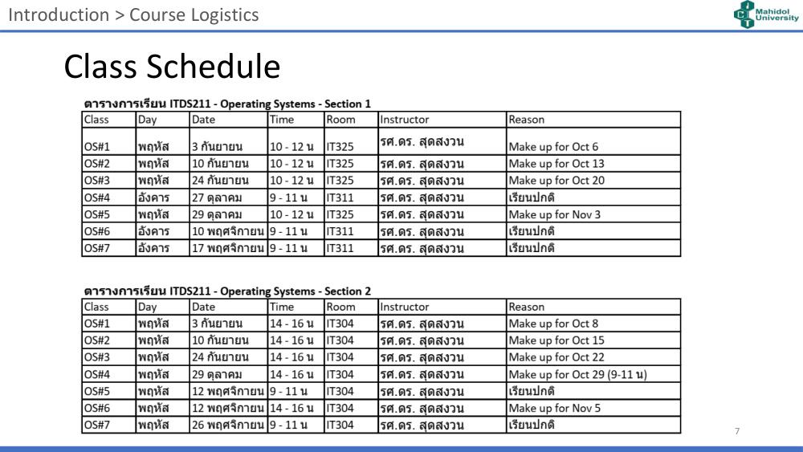
| Class | Section 1 (10–12 น.) | Section 2 (14–16 น.) |
|---|---|---|
| OS#1 | พฤหัส 3 ก.ย. IT325 | พฤหัส 3 ก.ย. IT304 |
| OS#2 | พฤหัส 10 ก.ย. IT325 (make up for Oct 13) | พฤหัส 10 ก.ย. IT304 (make up for Oct 15) |
| OS#3 | พฤหัส 24 ก.ย. IT325 (make up for Oct 20) | พฤหัส 24 ก.ย. IT304 (make up for Oct 22) |
| OS#4 | อังคาร 27 ต.ค. 9–11 น. IT311 (เรียนปกติ) | พฤหัส 29 ต.ค. IT304 (make up for Oct 29 9–11 น.) |
| OS#5 | พฤหัส 29 ต.ค. IT325 (make up for Nov 3) | พฤหัส 12 พ.ย. 9–11 น. IT304 (เรียนปกติ) |
| OS#6 | อังคาร 10 พ.ย. 9–11 น. IT311 (เรียนปกติ) | พฤหัส 12 พ.ย. 14–16 น. IT304 (make up for Nov 5) |
| OS#7 | อังคาร 17 พ.ย. 9–11 น. IT311 (เรียนปกติ) | พฤหัส 26 พ.ย. 9–11 น. IT304 (เรียนปกติ) |
(ถอดจากภาพตารางในสไลด์ ตัวเล็กมาก ควรเช็กวันและห้องกับ MyCourses อีกครั้ง)
1.5 Outline ของครึ่ง OS
| Class | Tentative Topic |
|---|---|
| OS#1 | Introduction to OS |
| OS#2 | Process and Process Scheduling |
| OS#3 | Synchronization |
| OS#4 | Memory Management |
| OS#5 | File Systems |
| OS#6 | Disk and I/O Management |
| OS#7 | Deadlock |
1.6 Grading Policy (ส่วน OS)
| Item | Percentage |
|---|---|
| Quizzes | 10% |
| Homework | 10% |
| Final Exam | 30% |
- ⚠️ ลอกงานหรือโปรเจกต์ของคนอื่น = ได้ศูนย์ทุกคนที่เกี่ยวข้อง (ทั้งคนลอกและคนให้ลอก)
- คะแนนสุดท้าย รวมกับส่วน Computer Architecture
2. Computer Architecture Review
2.1 Components of Computer Systems
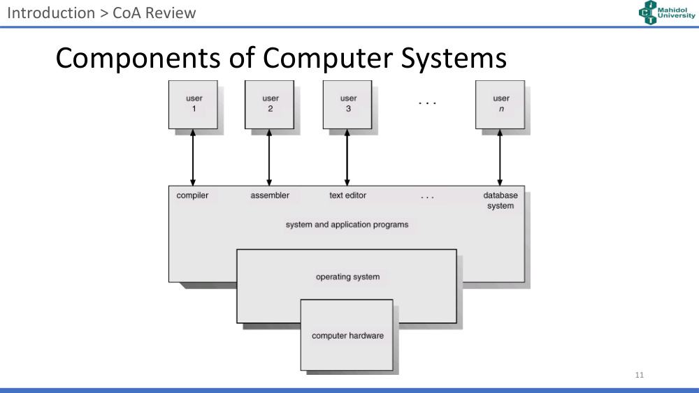
ระบบคอมพิวเตอร์แบ่งเป็น 4 ชั้น จากล่างขึ้นบน:
| # | ส่วนประกอบ | หน้าที่ |
|---|---|---|
| 1 | Hardware | ให้ทรัพยากรพื้นฐานในการคำนวณ: CPU, memory, I/O devices |
| 2 | Operating system | ควบคุมและประสาน การใช้ hardware ระหว่างโปรแกรมต่าง ๆ ของผู้ใช้หลายคน |
| 3 | Application programs | กำหนดว่าจะ ใช้ทรัพยากรแก้ปัญหา อย่างไร เช่น compiler, assembler, text editor, database system |
| 4 | Users | คน เครื่องจักร หรือคอมพิวเตอร์อื่น |
💡 OS อยู่ตรงกลางระหว่างโปรแกรมกับ hardware โปรแกรมไม่ได้คุยกับ hardware ตรง ๆ แต่ต้องผ่าน OS เสมอ
2.2 Simplified Computer Architecture
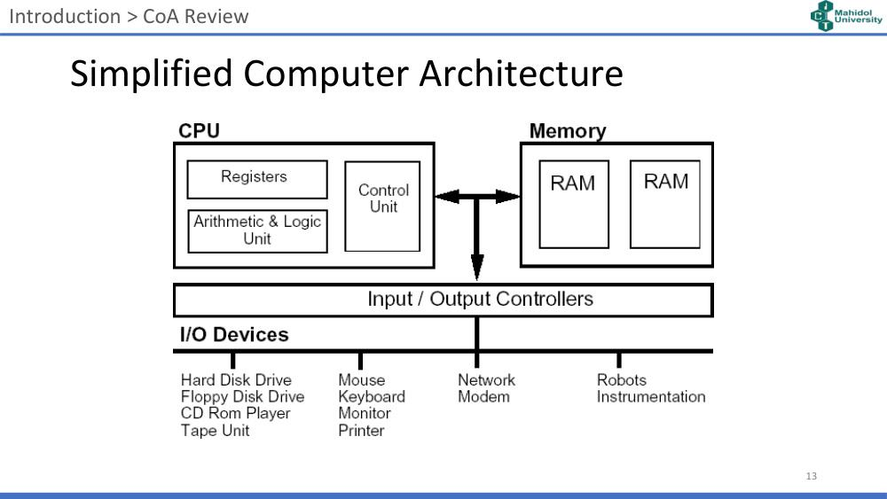
- CPU ประกอบด้วย Registers (ที่เก็บข้อมูลเร็วมากในตัว CPU), Arithmetic & Logic Unit (ALU) (คำนวณและเปรียบเทียบ) และ Control Unit (ควบคุมจังหวะการทำงาน)
- Memory คือ RAM เก็บโปรแกรมและข้อมูลที่กำลังใช้
- Input/Output Controllers เชื่อม CPU และ memory กับ I/O Devices:
- Hard Disk Drive, Floppy Disk Drive, CD Rom Player, Tape Unit
- Mouse, Keyboard, Monitor, Printer
- Network, Modem
- Robots, Instrumentation
- ทุกส่วนเชื่อมกันด้วย bus
2.3 How an instruction is run
สไลด์มีวิดีโอ (https://www.youtube.com/watch?v=XM4lGflQFvA) แสดงว่า CPU ดึงคำสั่งจาก memory ผ่าน address bus และ data bus แล้ว decode ด้วย Control Unit อย่างไร (ในภาพมี register PC, MAR, IR, ALU และช่อง memory address AE00–EC03)
2.4 Fetch-Decode-Execute
สำหรับแต่ละคำสั่งในโปรแกรม processor จะ:
- Fetch — ดึงคำสั่งจาก memory
- Decode — ถอดความว่าต้องทำอะไร
- Execute — ทำตามคำสั่ง เช่น บวกเลขสองตัว
วนซ้ำจนโปรแกรมจบ
💡 เหมือนเชฟทำอาหารตามสูตร: หยิบบรรทัดถัดไปของสูตร (fetch) → อ่านว่าให้ทำอะไร (decode) → ลงมือหั่นหรือผัด (execute) → หยิบบรรทัดต่อไป
3. Operating Systems
3.1 Ultimate Goal: Easy-to-use System
Fetch-Decode-Execute ดูง่าย แต่... ในความจริงมีอีกหลายเรื่องที่ต้องจัดการให้โปรแกรมทำงานราบรื่น เช่น:
- รันหลายโปรแกรมพร้อมกัน (สำหรับผู้ใช้หลายคน)
- แบ่ง memory ให้หลายโปรแกรมใช้ร่วมกัน
- ควบคุมการเข้าถึง I/O devices
➜ Operating system มีหน้าที่ทำให้ระบบทำงาน ถูกต้อง (correctly) และ มีประสิทธิภาพ (efficiently) ในแบบที่ ใช้งานง่าย (easy-to-use)
3.2 Roles of OS
OS คือ ซอฟต์แวร์ ที่มี 3 บทบาทหลัก:
- Virtualization ของทรัพยากรกายภาพ
- APIs (standard library)
- Resource manager
3.3 บทบาทที่ 1: Virtualization of hardware
ทำไมต้อง virtualize? เพราะทรัพยากรจริงมีจำกัด:
- CPU รันได้ทีละไม่กี่คำสั่ง
- Memory ต้องแบ่ง กันใช้หลายโปรแกรม
OS เอาทรัพยากรจริงเหล่านี้มาทำให้ ดูเหมือนมีไม่จำกัด เรียกเทคนิคนี้ว่า Virtualization บางครั้งจึงเรียก OS ว่า virtual machine หรือ extended machine
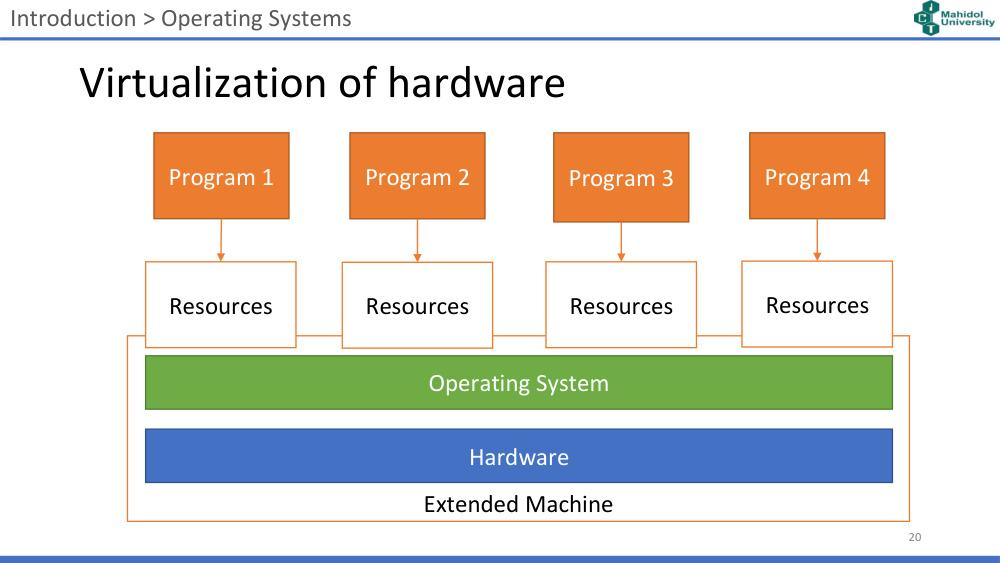
ภาพ: Program 1–4 ต่างมี "Resources" ของตัวเอง ทั้งที่จริงทุกตัวใช้ hardware ชุดเดียวกันผ่าน OS กรอบทั้งหมดคือ Extended Machine
ตัวอย่าง: Virtualizing CPU
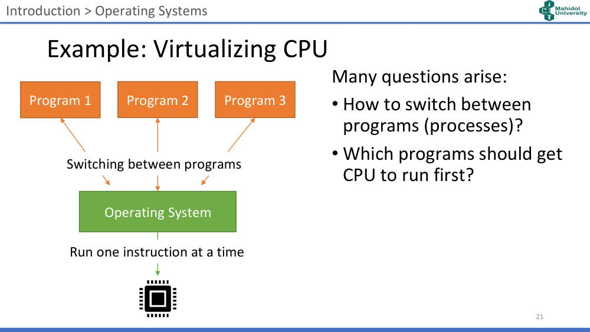
- CPU รันได้ทีละหนึ่งคำสั่ง แต่ OS สลับระหว่างโปรแกรม เร็ว ๆ จนดูเหมือนทุกโปรแกรมรันพร้อมกัน
- คำถามที่ตามมา (ตอบใน Lecture 2):
- จะ สลับระหว่างโปรแกรม (process) อย่างไร?
- โปรแกรมไหนควรได้ CPU ก่อน? (scheduling)
ตัวอย่าง: Virtualizing Memory
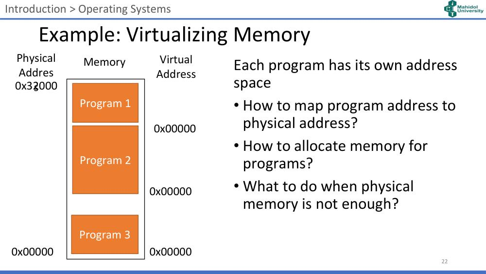
- แต่ละโปรแกรมมี address space ของตัวเอง ทุกโปรแกรมเห็นว่า address เริ่มที่ 0x00000 (virtual address) แต่จริง ๆ อยู่คนละตำแหน่งใน physical memory (0x00000–0x32000)
- คำถามที่ตามมา (ตอบใน Memory Management):
- จะ map address ของโปรแกรมไปเป็น physical address อย่างไร?
- จะ จัดสรร memory ให้โปรแกรมอย่างไร?
- ถ้า physical memory ไม่พอ จะทำอย่างไร?
💡 เหมือนหอพักที่ทุกห้องเรียกเลขห้องภายในว่า "ห้อง 1" ของตัวเอง (virtual) แต่ผู้ดูแลหอรู้ว่าจริง ๆ อยู่ชั้นไหนตึกไหน (physical)
3.4 บทบาทที่ 2: APIs
- เพื่อให้ผู้ใช้ บอก OS ได้ว่าต้องการอะไร เช่น
- รันโปรแกรม
- เข้าถึงไฟล์
- จอง memory
- OS จึงให้ APIs (system calls หรือ standard library) ให้ผู้ใช้และแอปเรียกใช้บริการของ OS
- APIs ซ่อนความซับซ้อนของ hardware
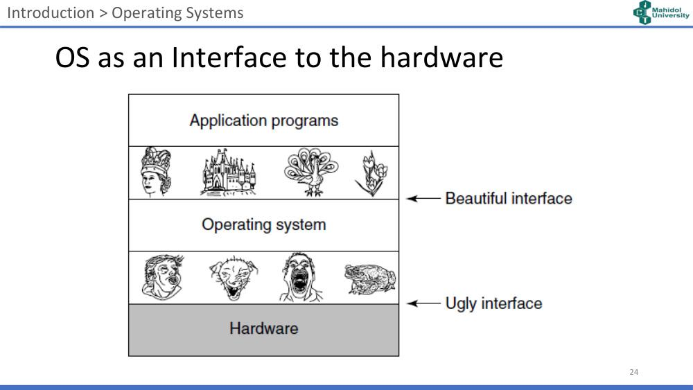
OS as an Interface to the hardware: ภาพแสดงว่า OS ให้ "beautiful interface" กับ application programs ด้านบน และซ่อน "ugly interface" ของ hardware ไว้ด้านล่าง
💡 โปรแกรมเมอร์เขียน
open("file.txt")ได้เลย ไม่ต้องรู้ว่าต้องสั่งหัวอ่านดิสก์ไปที่ sector ไหน
3.5 บทบาทที่ 3: Resource Manager
- หลายโปรแกรมที่ รันพร้อมกัน (concurrently) ต้องแบ่งทรัพยากร:
- CPU time
- Memory space
- Disk และ I/O devices อื่น ๆ
- OS จึงเป็น resource manager ที่แจกทรัพยากรให้โปรแกรม เพื่อให้ได้ ประสิทธิภาพสูง (efficiency) และ ความยุติธรรม (fairness)
⚠️ Virtualization vs Resource manager: virtualization ทำให้ "ดูเหมือนมีไม่จำกัด" ส่วน resource manager คือ "ตัดสินใจว่าใครได้อะไรเมื่อไหร่" สองอย่างทำงานคู่กัน
4. Design Goals ของ OS
| เป้าหมาย | ความหมาย |
|---|---|
| Abstraction | ทำให้ระบบ สะดวกและใช้ง่าย |
| Performance | ลด overhead ที่เกิดจากการ virtualize และจัดการทรัพยากร |
| Protection | แยก process ออกจากกัน ไม่ให้ตัวหนึ่งทำร้ายตัวอื่น |
| Others | ประหยัดพลังงาน (energy-efficient), ความปลอดภัย (security), การเคลื่อนที่ (mobility) |
💡 Overhead = งานเพิ่มที่ OS ต้องทำเอง (เช่น สลับโปรแกรม) ซึ่งไม่ได้เป็นงานของผู้ใช้โดยตรง ยิ่งน้อยยิ่งดี
5. History of Operating Systems
ภาพรวม 5 ยุค
| ยุค | ชื่อ | Hardware / สภาพ | แนวคิดสำคัญ |
|---|---|---|---|
| 1 | Human OS | Mainframes | คน (operator) คุมเครื่องเอง ทำทีละ job |
| 2 | Batch System | Mainframes, punch cards, tape | OS แรก: automatic job sequencing |
| 3 | Multiprogramming | Hardware ถูก คนแพง (IBM System/360) | โหลดหลาย job ใน memory, spooling |
| 4 | Personal Computer | Hardware ถูกมาก คนแพงมาก | Multitasking, multiprocessing, GUI |
| 5 | Mobile Computers | อุปกรณ์เล็ก | ประหยัดพลังงาน, UI แบบใหม่, wireless |
5.1 First Generation: Human OS
- Hardware: Mainframes
- OS: มนุษย์ (human operators)
- ทำได้ทีละ 1 job (job = หน่วยของงานประมวลผล)
- เวลาเครื่องเสียเปล่า ขณะ operator เดินไปมาในห้องเครื่อง
5.2 Second Generation: Batch System
- ยังมี operator รับ punch cards (โปรแกรมจากผู้ใช้) มาโหลดเข้าเครื่อง
- OS ตัวแรก: Automatic job sequencing
- ส่งต่อการควบคุม จาก job หนึ่งไปอีก job โดยอัตโนมัติ
- ลดเวลา setup ด้วยการรวม job ที่คล้ายกันเป็นชุด (batch)
- ใช้กับงาน คำนวณวิทยาศาสตร์และวิศวกรรม
- ภาษา: FORTRAN และ Assembly
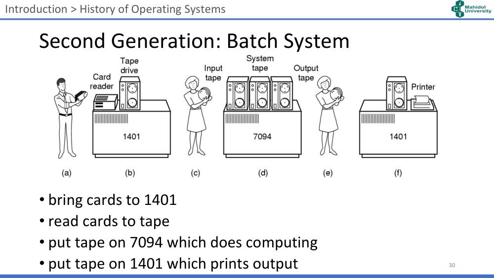
ขั้นตอนตามภาพ:
- นำ cards ไปที่เครื่อง 1401
- อ่าน cards ลง tape
- นำ tape ไปใส่เครื่อง 7094 ซึ่ง ทำการคำนวณ
- นำ tape ไปใส่เครื่อง 1401 เพื่อ พิมพ์ผลลัพธ์
💡 ทำไมต้องแยกเครื่อง? เครื่อง 7094 แพงและเร็ว จึงให้ทำแต่การคำนวณ ส่วนงาน I/O ช้า ๆ (อ่านการ์ด พิมพ์) ให้เครื่อง 1401 ที่ถูกกว่าทำ
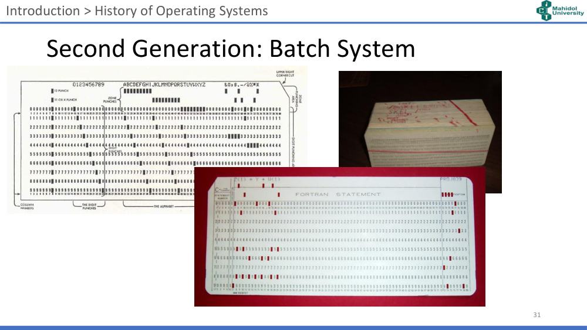
5.3 Third Generation: Multiprogramming
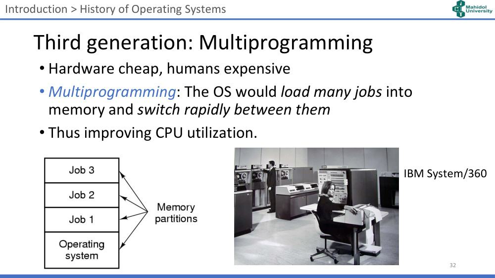
- Hardware ถูก คนแพง จึงต้องใช้เครื่องให้คุ้มที่สุด
- Multiprogramming: OS โหลดหลาย job ไว้ใน memory แล้ว สลับระหว่างกันอย่างรวดเร็ว
- จึง เพิ่ม CPU utilization (CPU ไม่ต้องนั่งรอเปล่า ๆ ตอน job หนึ่งรอ I/O)
- ภาพ: memory แบ่งเป็น partition ให้ Operating system, Job 1, Job 2, Job 3; เครื่องตัวอย่างคือ IBM System/360
5.4 Third Generation: Spooling
- Spooling = Simultaneous Peripheral Operation On Line
- ทำ I/O ของ job หนึ่งซ้อนเวลากับการคำนวณของอีก job (overlap)
- ขณะรัน job หนึ่ง OS จะ:
- อ่าน job ถัดไป จาก card reader ไปเก็บในพื้นที่บน disk ที่เรียกว่า job queue
- ส่ง printout ของ job ก่อนหน้า จาก disk ไปที่ printer
- Job pool (Job queue)
- โครงสร้างที่ให้ OS เลือกว่าจะรัน job ไหนต่อ เพื่อเพิ่ม CPU utilization
- เอา job ไปพักใน buffer ที่อุปกรณ์เข้าถึงได้เมื่ออุปกรณ์พร้อม
💡 เหมือนคิวสั่งพิมพ์ในออฟฟิศ: ทุกคนกด print ได้ทันที เอกสารไปรอในคิว เครื่องพิมพ์ค่อยทยอยพิมพ์ ไม่ต้องยืนรอหน้าเครื่อง
⚠️ Multiprogramming vs Spooling: multiprogramming = หลาย job อยู่ใน memory แล้ว CPU สลับ ทำ / spooling = ใช้ disk เป็นบัฟเฟอร์ ให้ I/O ช้า ๆ ทำไปพร้อมการคำนวณ
5.5 Fourth Generation: Personal Computer
- Hardware ถูกมาก คนแพงมาก
- OS ให้ ผู้ใช้คนเดียวทำหลายงานพร้อมกัน
- Multitasking: รัน หลายโปรแกรม บนเครื่องเดียว พร้อมกัน
- Multiprocessing: ใช้ หลาย processor บนเครื่องเดียว
- ใช้ Graphic User Interface (GUI)
⚠️ Multitasking = หลาย โปรแกรม (CPU ตัวเดียวก็ทำได้ด้วยการสลับ) / Multiprocessing = หลาย processor (ทำพร้อมกันจริง)
History of Personal Computers
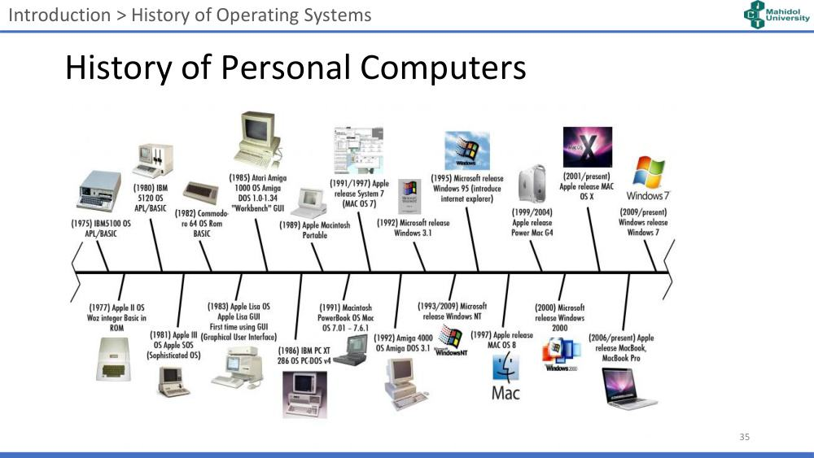
ไทม์ไลน์ในภาพ (ปีเด่น ๆ):
- 1975 IBM 5100 OS APL/BASIC, 1977 Apple II OS (Woz integer Basic in ROM), 1980 IBM 5120 OS APL/BASIC
- 1981 Apple III OS (Apple SOS), 1982 Commodore 64 OS ROM BASIC, 1983 Apple Lisa OS (GUI แรก), 1985 Atari/Amiga "Workbench" GUI
- 1986 IBM PC XT 286 OS PC-DOS v4, 1989 Apple Macintosh Portable, 1991 Macintosh PowerBook (Mac OS 7), 1992 Windows 3.1 / Amiga OS 3.1
- 1993/2009 Windows NT, 1995 Windows 95 (Internet Explorer), 1997 Mac OS 8, 1999/2004 Power Mac G4
- 2000 Windows 2000, 2001 Mac OS X, 2006 MacBook, 2009 Windows 7
5.6 Fifth Generation: Mobile Computers
- Hardware: อุปกรณ์ขนาดเล็ก
- OS ต้องรองรับเพิ่ม:
- Energy efficiency — แบตเตอรี่จำกัด
- User interface แบบใหม่ — จอสัมผัส
- Wireless network communication
- Mobile OS คือ OS ที่ถูกใช้มากที่สุด (ตั้งแต่ปี 2017)
History of Mobile Computers
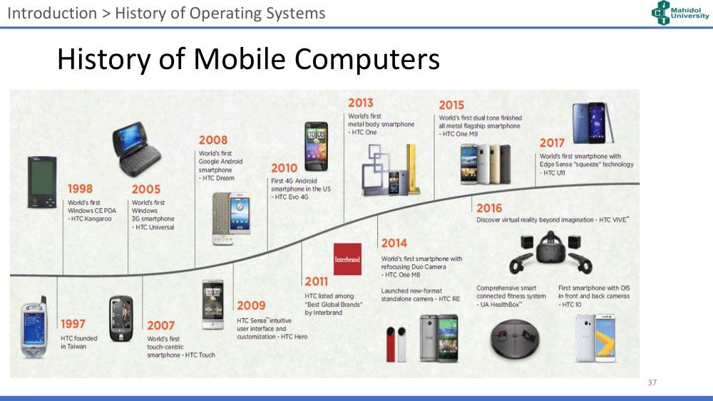
ไทม์ไลน์ในภาพ (อิงผลิตภัณฑ์ HTC): 1997 HTC ก่อตั้งในไต้หวัน, 1998 Windows CE PDA เครื่องแรก, 2005 สมาร์ทโฟน Windows 3G, 2007 สมาร์ทโฟนจอสัมผัส (HTC Touch), 2008 สมาร์ทโฟน Google Android เครื่องแรก (HTC Dream), 2009 HTC Sense UI, 2010 สมาร์ทโฟน 4G Android เครื่องแรกในสหรัฐฯ, 2011–2013 แบรนด์ติดอันดับโลกและ HTC One, 2014–2017 กล้อง dual/สมาร์ทโฟนหลายรุ่น และ VR (HTC VIVE)
5.7 Migration of OS Concepts and Features
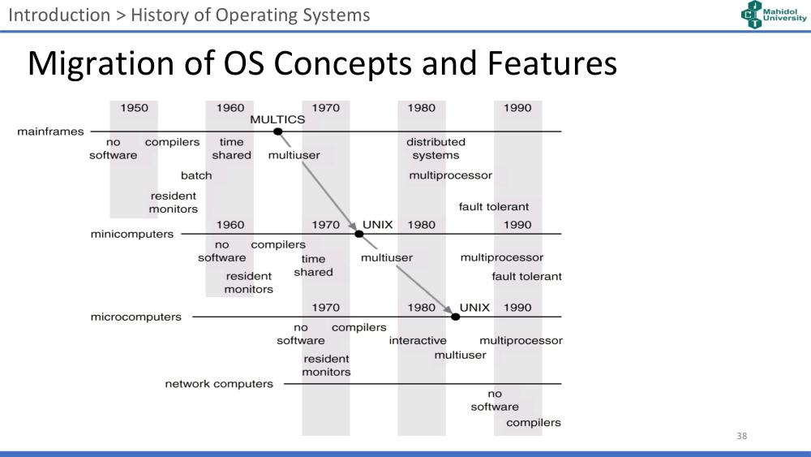
ใจความของภาพ: แนวคิดที่เกิดบน mainframes ก่อน (เช่น compilers, time shared, batch, resident monitors, multiuser, distributed systems, multiprocessor, fault tolerant) ค่อย ๆ ย้ายลงไป สู่ minicomputers → microcomputers → network computers ในอีกหลายปีต่อมา
- เส้นทแยง MULTICS (1960s, mainframe) → UNIX (1970, minicomputer) → UNIX (1980, microcomputer) แสดงการสืบทอดแนวคิด
- อุปกรณ์ยุคใหม่เริ่มจาก "no software" แล้วค่อยได้ฟีเจอร์เดิมของเครื่องใหญ่
💡 ฟีเจอร์ที่เคยมีแต่ในเครื่องใหญ่ราคาแพง มักกลายเป็นของปกติในเครื่องเล็กในภายหลัง เช่น multitasking ที่ตอนนี้มีในมือถือทุกเครื่อง
6. OS Zoo
| ประเภท | ตัวอย่าง |
|---|---|
| Mainframe operating systems | OS/360 |
| Server operating systems | UNIX (Linux, FreeBSD, AIX), Windows 2012 R2 |
| Personal computer operating systems | Windows 7/10, Mac OS, Linux |
| Real-time operating systems | VxWorks, QNX |
| Mobile operating systems | Android, iOS |
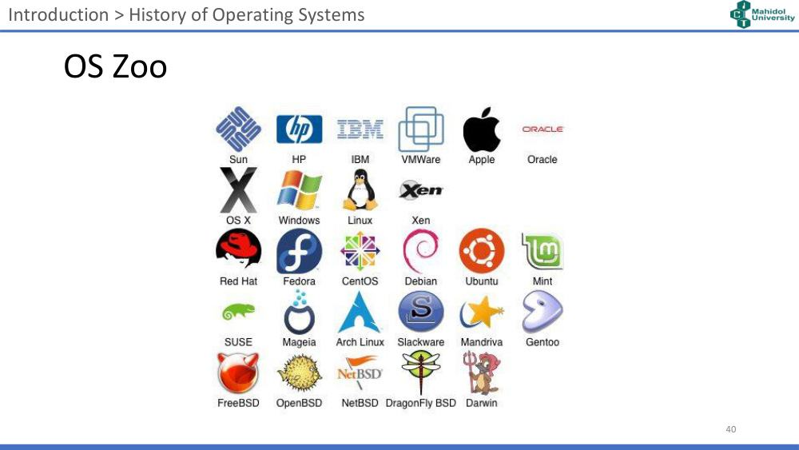
ภาพรวมโลโก้: Sun, HP, IBM, VMware, Apple, Oracle, OS X, Windows, Linux, Xen, Red Hat, Fedora, CentOS, Debian, Ubuntu, Mint, SUSE, Mageia, Arch Linux, Slackware, Mandriva, Gentoo, FreeBSD, OpenBSD, NetBSD, DragonFly BSD, Darwin
💡 Real-time OS ต้องตอบสนองทันเวลาที่กำหนดเสมอ ใช้ในระบบควบคุม เช่น รถยนต์ เครื่องบิน เครื่องมือแพทย์ (คำอธิบายเสริม)
7. คำศัพท์สำคัญ
| คำศัพท์ | ความหมาย | จำง่าย ๆ ว่า |
|---|---|---|
| Operating System (OS) | ซอฟต์แวร์ที่ควบคุมและประสานการใช้ hardware ระหว่างโปรแกรม | ผู้จัดการเครื่อง |
| Fetch-Decode-Execute | วงจรการทำงานของ CPU ต่อ 1 คำสั่ง | หยิบ-อ่าน-ทำ |
| Virtualization | ทำให้ทรัพยากรจำกัดดูเหมือนมีไม่จำกัด | ภาพลวงว่ามีเครื่องของตัวเอง |
| Virtual / Extended machine | ชื่อเรียก OS ในมุมของ virtualization | เครื่องเสมือน |
| Address space | พื้นที่ address ของแต่ละโปรแกรม | ห้องของตัวเอง |
| Virtual vs Physical address | address ที่โปรแกรมเห็น vs ตำแหน่งจริงใน RAM | เลขห้องในใจ vs เลขห้องจริง |
| API / System call | ช่องทางให้โปรแกรมขอบริการจาก OS | เมนูสั่งงาน OS |
| Resource manager | บทบาท OS ที่แจกทรัพยากรอย่างมีประสิทธิภาพและยุติธรรม | คนแบ่งเค้ก |
| Abstraction / Performance / Protection | design goals ของ OS | ง่าย / เร็ว / ปลอดภัยจากกัน |
| Overhead | งานเพิ่มที่ OS ต้องทำ | ค่าบริหาร |
| Job | หน่วยของงานประมวลผล | งานหนึ่งชิ้น |
| Batch system | รวม job คล้ายกันแล้วรันต่อกันอัตโนมัติ | ทำเป็นชุด |
| Automatic job sequencing | OS แรก ส่งต่อการควบคุมระหว่าง job | ต่อคิวอัตโนมัติ |
| Multiprogramming | โหลดหลาย job ใน memory แล้วสลับ | หลาย job ในหน่วยความจำ |
| Spooling | Simultaneous Peripheral Operation On Line ใช้ disk เป็นบัฟเฟอร์ I/O | คิวพิมพ์ |
| Job pool / Job queue | ที่พัก job ให้ OS เลือกรัน | คิวงาน |
| CPU utilization | สัดส่วนเวลาที่ CPU ทำงานจริง | CPU ไม่ว่าง |
| Multitasking | รันหลายโปรแกรมพร้อมกัน | หลายโปรแกรม |
| Multiprocessing | ใช้หลาย processor | หลาย CPU |
| GUI | Graphic User Interface | หน้าจอกราฟิก |
| Real-time OS | OS ที่ต้องตอบสนองทันเวลา | ช้าไม่ได้ |
8. สรุปท้ายบท / จุดที่มักออกสอบ
เรื่องที่ต้องจำ
- 3 คำถามหลักของวิชา: virtualize ทรัพยากร, concurrent programs ที่ถูกต้อง, เก็บข้อมูลถาวร
- 4 ส่วนของระบบคอมพิวเตอร์: hardware, OS, application programs, users
- Fetch → Decode → Execute วนจนโปรแกรมจบ
- OS มี 3 บทบาท: virtualization, APIs, resource manager
- Virtualizing CPU: สลับโปรแกรม → คำถามเรื่องการสลับและการเลือกว่าใครรันก่อน
- Virtualizing memory: แต่ละโปรแกรมมี address space เริ่มที่ 0x00000 → คำถามเรื่อง mapping, allocation, memory ไม่พอ
- Design goals: abstraction, performance (ลด overhead), protection (แยก process) + energy, security, mobility
- 5 ยุค OS: Human OS → Batch → Multiprogramming/Spooling → PC → Mobile
- Batch กับเครื่อง 1401/7094: cards → tape (1401) → คำนวณ (7094) → พิมพ์ (1401)
- Mobile OS ใช้มากที่สุดตั้งแต่ 2017
- คะแนน OS: Quizzes 10%, Homework 10%, Final 30%
คู่ที่มักสับสน
| คู่ | ต่างกันที่ |
|---|---|
| Virtualization vs Resource manager | ทำให้ดูเหมือนมีไม่จำกัด vs ตัดสินใจแจกทรัพยากร |
| Virtual vs Physical address | ที่โปรแกรมเห็น vs ตำแหน่งจริง |
| Batch vs Multiprogramming | ทำทีละ job ต่อกัน vs หลาย job ใน memory แล้วสลับ |
| Multiprogramming vs Spooling | CPU สลับหลาย job vs ใช้ disk พัก I/O |
| Multitasking vs Multiprocessing | หลายโปรแกรม vs หลาย processor |
แนวคิดที่ต้องอธิบายได้
- ทำไมต้องมี OS ทั้งที่ fetch-decode-execute ดูง่าย: เพราะต้องรันหลายโปรแกรม แบ่ง memory และคุม I/O ให้ถูกต้อง มีประสิทธิภาพ และใช้ง่าย
- ทำไม OS ถูกเรียกว่า extended machine: เพราะให้เครื่องเสมือนที่ใช้ง่ายกว่าและดูมีทรัพยากรมากกว่าของจริง
- ทำไม multiprogramming เพิ่ม CPU utilization: เพราะ CPU ไม่ต้องรอเมื่อ job หนึ่งรอ I/O สลับไปทำ job อื่นได้
- ทำไมยุค mobile ต้องเน้นพลังงาน: เพราะอุปกรณ์ใช้แบตเตอรี่